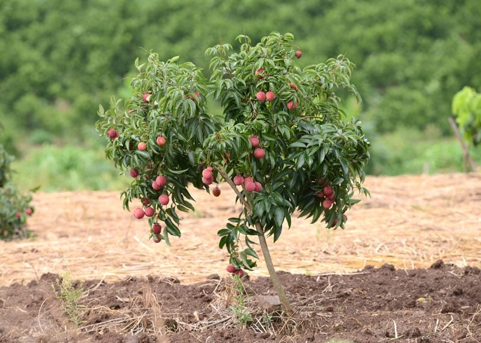
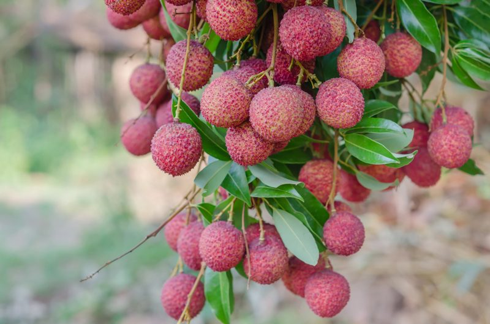
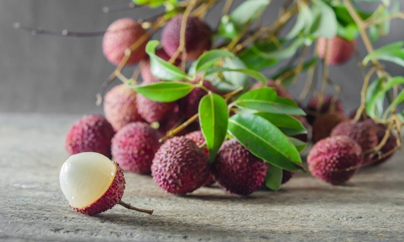

Lychee – And its Translucent Flesh
The lush, dark green foliage adds great contrast to the Lychee fruits that hang in bunches like giant, rose-colored grapes. The rugged outer skin flakes away easily revealing the delicate, velvety fruit that awaits beneath. Bite into the moist, sweet flesh and experience the rush of exotic flavor unique to the Lychee fruit.
I had the pleasure of trying these delicious orbs when I was visiting a friend in Hawaii. The distinct taste of the Lychee’s white, somewhat translucent flesh almost defies description. Some say the taste is like combining the flavors of pear, grape, and coconut milk all in one fruit and I have to say that I agree.

What is Lychee Fruit?
Common names of this gorgeous fruit are Lychee, Litchi, Leechee, Lichee, or Lichi. This fruit is a rarity in the United States since they are subtropical evergreens. They are grown in many subtropical areas such as Southeast China, India, Indonesia, Israel, Madagascar, Malaysia, Mauritius, Mexico, Myanmar, Pakistan, South Africa, Taiwan, Thailand, Vietnam, and the U.S. (Florida, Hawaii, California).
Lychee Foliage
- An evergreen tree, its dark green, glossy and leathery leaves are divided into four to eight leaflets, and each is about 1.5-4 inches long.
- Lychee leaves have been used to make vegetable dye.
Lychee Flowers
- It produces yellow individual male and female flowers, meaning it’s a monoecious plant, gathered in long terminal clusters composed of up to 3,000 flowers.
- Lychee flowers are small, white or yellowish in color and bunched at the tip of branches.
- Lychee trees bloom in the late winter to early spring.
- Flowering precedes fruit maturity by about 140 days.
Lychee Fruits
- Lychee fruits grow in loose, pendent clusters of between two to thirty fruits and are usually strawberry-red or sometimes pinkish in color.
- They are round, measuring about 1 to 1.5 inches in diameter, and are covered with thin leathery skin.
- The fruit’s glossy, succulent, translucent-white to pinkish fleshy aril is juicy and sweet, which varies in size and form. The seed within is hard and oblong, with a shiny dark-brown coat and white inside.
- The lychee tree is known to reach its prime production in its 20th to 40th year and can stay productive for another 100 years.
Lychee Seeds
- In the center of the transparent fruit is a brown, shiny seed. These seeds can be used to grow another tree.
- Traditional Chinese medicine uses the nut for alleviating pain, testicular swelling, dysmenorrhea, and postpartum abdominal pain. (1)
- A little-known fact is that the seed of the lychee is toxic and can wreak havoc with the digestive system. Ensure that you do not consume the seed.
Lychee Tree Trunk
- The wood is incredibly dense allowing it to take an incredible natural polish.
- The wood has a reddish color.
- Figured or color patterns are common adding to the beauty of the wood.
- Drying should be left to the sawmills as it will check and twist during the process if utmost care is not used.

How to Grow Lychee Trees
The lychee tree is considered a subtropical tree and it is grown in USDA zones 10-11 only. It is a beautiful specimen of a tree with its shiny leaves and attractive fruit; lychee thrives in deep, fertile, well-draining soil. They prefer an acidic soil of pH 5.0-5.5. When grown they are planted in a protected area, since their dense canopy can be caught up by the wind and cause the trees to topple over. The tree can reach 30-40 feet (9-12 m.) in height.
Harvesting Lychee Fruit
- Lychee trees begin producing fruit in three to five years.
- The thin, tough skin is green when immature, ripening to red or pink-red. To harvest the fruit, allow them to turn red.
- Fruit picked when green will not ripen any further.
- Remove the fruit from the tree by cutting it from the branch just above the panicle bearing the fruit.
- Once harvested, the fruit can be stored in the refrigerator in a plastic bag for up to two weeks.
- Lychees do have one downfall, and that is their high sugar content… about 29 grams in one cup. For this reason, eat lychees only in moderation.
How to Enjoy
- Lychees are easy to prepare and taste delicious when eaten chilled.
- The skin is inedible but easily removed to expose a layer of translucent white flesh.
- The seeds are inedible.

© AmieSue.com